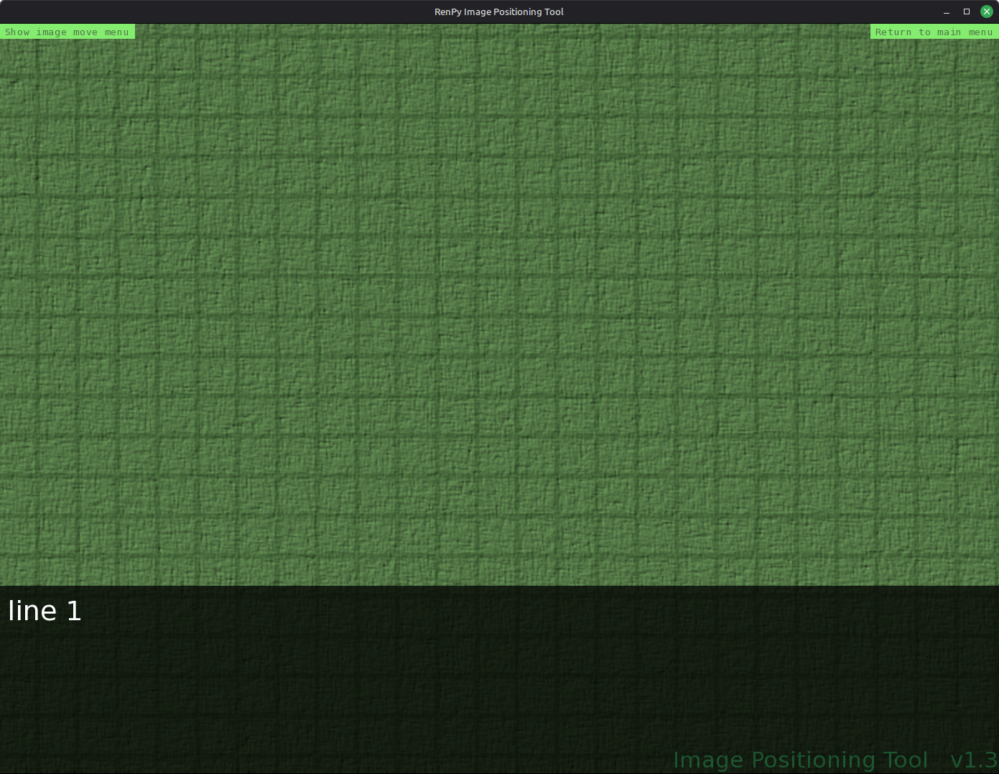
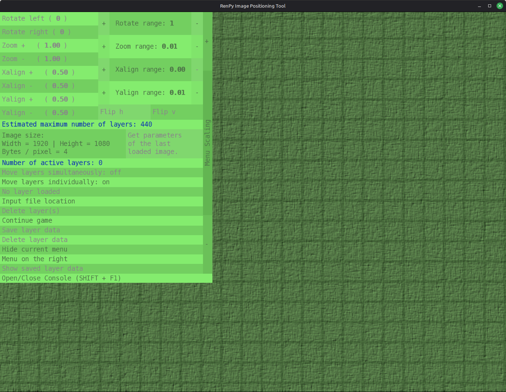
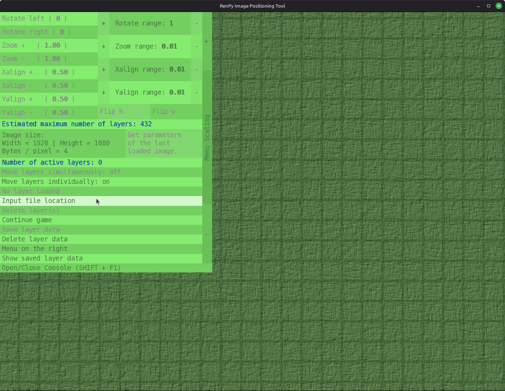
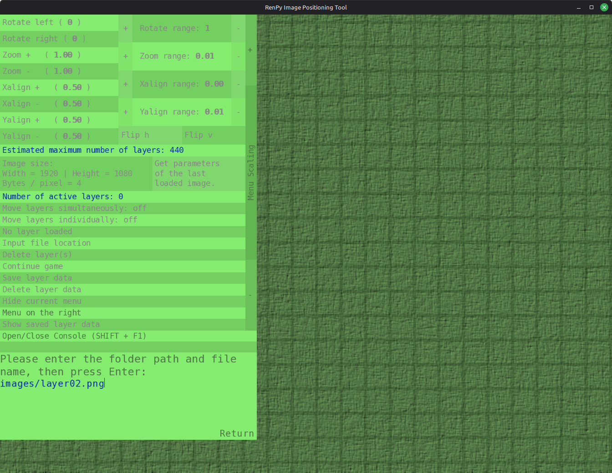
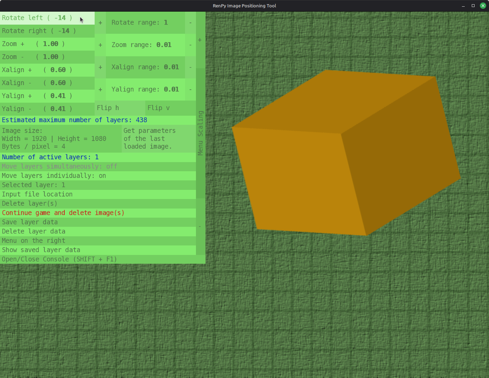
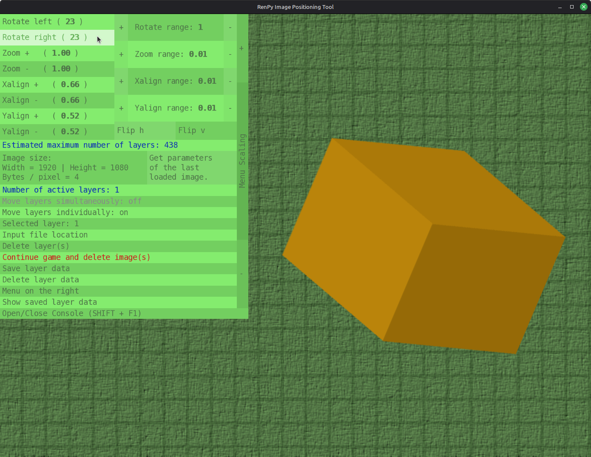

Ren'Py Image Positioning Tool
Bei der Erstellung von Ren'Py-Projekten störte mich immer wieder, dass ich beim Positionieren von Bildern die Koordinaten abschätzen und das Script zur Kontrolle ständig neu laden musste. Um diesen Ablauf komfortabler zu gestalten, habe ich das Ren’Py Image Positioning Tool entwickelt. Damit können während eines laufenden Projektes Bilder geladen sowie deren Größe, Winkel und Position präzise angepasst werden. Die exakten Koordinaten und Eigenschaften der Bilder werden anschließend geordnet in einer Datei gespeichert, so dass sie sich bequem in das Projekt-Skript übertragen lassen.
Dokumentation
Dokumentation durchsuchen
Bitte Suchbegriff eingeben.
Inhalt
Voraussetzungen
- Installierte Ren'Py-Engine. • Neueste Version herunterladen.
- Ein vorhandenes Ren'Py-Projekt. • Beispielprojekt herunterladen.
- Das im gewünschten Projekt installierte Ren'Py Image Positioning Tool. • Image Positioning Tool herunterladen.
Installation
In Entwicklung...
Image Move Menu starten
Nach der Installation im gewünschten Projekt sind im laufenden Spiel zwei neue Schaltflächen verfügbar.
"Show image move menu" stoppt das Spiel und blendet das Menü der Positionierungstools ein.
"Return to main menu" kehrt ohne Abfrage zum Hauptmenü zurück.


Bild laden
"Input file location": In dieses Eingabefeld kann der Name der gewünschten Bilddatei inklusive Endung eingegeben werden. Unterstützte Bildformate sind png, jpg, jpeg, webp, avif und svg. Die Bilder müssen sich im Projektordner befinden. Eventuelle Unterordner müssen mit eingegeben werden.


Bild drehen
In Entwicklung...


Funktionsübersicht
| Funktion | Beschreibung |
|---|---|
| Rotate Left (0-360) | Dreht das/die Bild(er) nach links. |
| Rotate Right (0-360) | Dreht das/die Bild(er) nach rechts. |
| Zoom + (0.00-1.00) | Vergrößert das/die Bild(er). |
| Zoom - (0.00-1.00) | Verkleinert das/die Bild(er). |